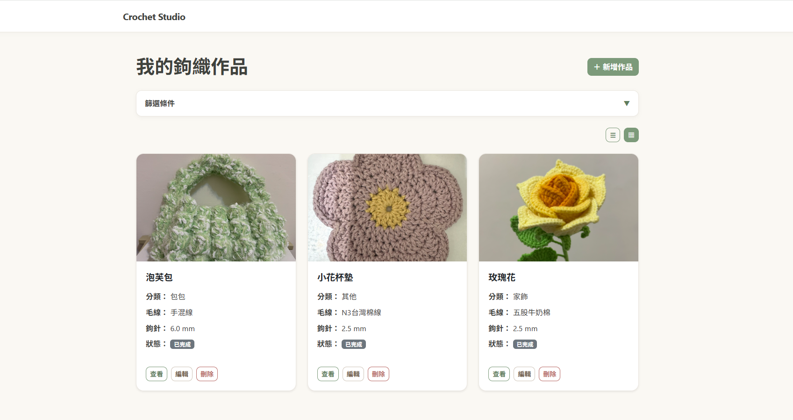

作品管理
提供作品新增、查詢、編輯與刪除功能， 保存作品分類、毛線、鉤針尺寸、 製作狀態與說明。
一套用來整理鉤織作品、記錄製作資訊， 並建立可重新編輯鉤織圖解的 Web 應用程式。

Crochet Studio 是一套以 Java Spring Boot 開發的 Web 應用程式。 可以管理紀錄自己的鉤織作品資訊。
除了基本的作品管理功能， 還有鉤織圖解編輯器， 可以在畫布中加入不同的鉤織符號， 並進行拖曳、旋轉、群組、 顏色設定以及圖解編輯。 圖解資料轉換為 JSON 儲存， 可以重新開啟既有圖解並繼續修改。
提供作品新增、查詢、編輯與刪除功能， 保存作品分類、毛線、鉤針尺寸、 製作狀態與說明。
可依作品名稱、分類、鉤針尺寸、 毛線名稱及作品狀態篩選作品清單， 提升查找效率。
使用 JavaScript 與 SVG 建立鉤織圖解， 可加入不同鉤織符號並自由調整位置， 支援符號選取、拖曳、旋轉、多選、複製貼上以及顏色設定。 將 SVG 畫布中的符號資訊轉換成 JSON， 儲存到資料庫後可再次載入並繼續編輯。
針對電腦與手機調整版面， 包含作品列表與鉤織圖解編輯介面。
集中顯示所有鉤織作品， 可以直接查看作品照片、分類、 毛線、鉤針尺寸及目前製作狀態。
作品列表另外提供搜尋與條件篩選， 可以依不同作品資訊快速找到需要的紀錄。
顯示作品分類、毛線、 鉤針尺寸、製作狀態、 作品說明以及所有作品照片。
同一個作品可以建立多個鉤織圖解， 並從作品詳細頁直接查看。
透過表單新增或修改作品資訊， 包含作品名稱、分類、毛線、 鉤針尺寸、狀態與文字說明。
編輯既有作品時也可以繼續新增作品照片， 並管理此作品的鉤織圖解。
使用 SVG 畫布建立可編輯鉤織圖解， 提供不同鉤針符號與顏色工具。
支援拖曳、多選、旋轉、群組、 複製貼上、Undo 以及 PNG 下載。
使用 Java 21 與 Spring Boot 作為後端核心， 採用 Spring MVC 處理 HTTP Request 與頁面導向， 並以 Controller、Service、Repository 分層實作系統功能；透過 Spring Data JPA 與 Hibernate 進行資料存取。
使用 Thymeleaf 建立動態頁面， 搭配 CSS 與 Bootstrap 設計使用者介面， 搭配 JavaScript 與 SVG 實作鉤織圖解編輯器， 並針對電腦與手機畫面進行響應式版面設計。
使用 Supabase 提供的 PostgreSQL 儲存作品資訊及圖解 JSON 等資料。
儲存使用者上傳的作品照片， 並保存圖片 URL 與作品之間的關聯。
使用 Azure App Service 部署系統， 並以環境變數管理正式環境的連線資訊與金鑰。
使用 IntelliJ IDEA 進行開發， 並使用 Git / GitHub 進行版本控制與程式碼管理。
使用 MVC + Service + Repository 分層架構。
Thymeleaf 負責將後端資料動態 呈現在 HTML 頁面。
接收使用者 HTTP Request， 並將操作交由 Service 處理。
處理作品、圖片與鉤織圖解的應用邏輯。
使用 Spring Data JPA 與 PostgreSQL 進行資料存取。